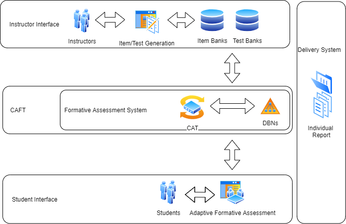
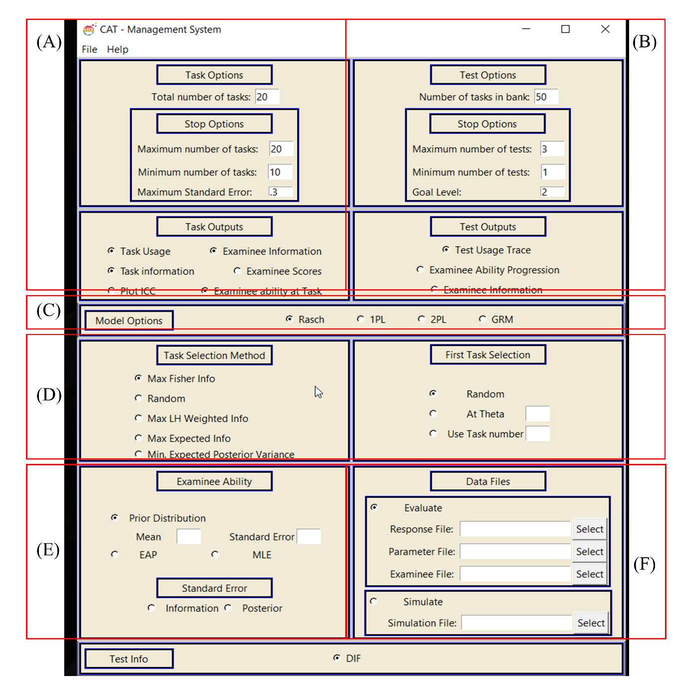
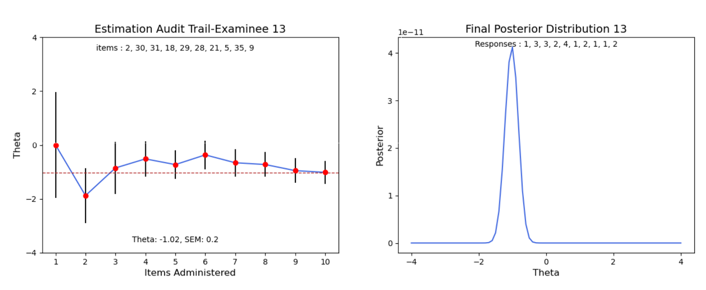
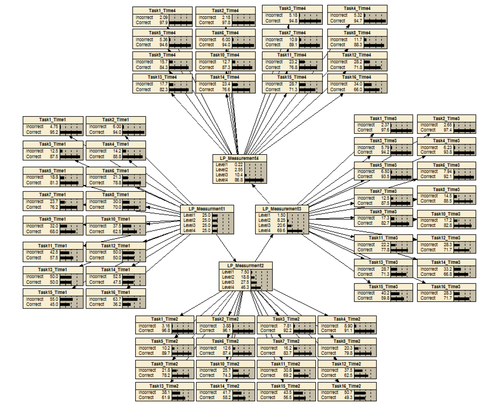

1. CAFT (Computerized Adaptive Formative Testing): Free online software for research [Website]
The CAFT can test an examinee by adaptively selecting item from an item bank. Also, Users can establish a serial assessment that can measure a learner’s ability change.   Choi, Y. & McClenen, C. (2020). Development of Adaptive Formative Assessment System using Computerized Adaptive Testing and Dynamic Bayesian Network, Journal of Applied Sciences.
2. CADT (Computerized Adaptive Diagnostics Testing): Upcoming
3. DBNs (Dynamic Bayesian Network): Upcoming
Reference Publication: Dynamic Bayesian Inference Network and hidden Markov Model for Modeling Learning Progression over Multiple Time Points. Choi, Y. & Mislevy, R (2012). Unpublished Dissertation from University of Maryland at College Park.
4. ML (Application for Machine Learnings): Upcoming